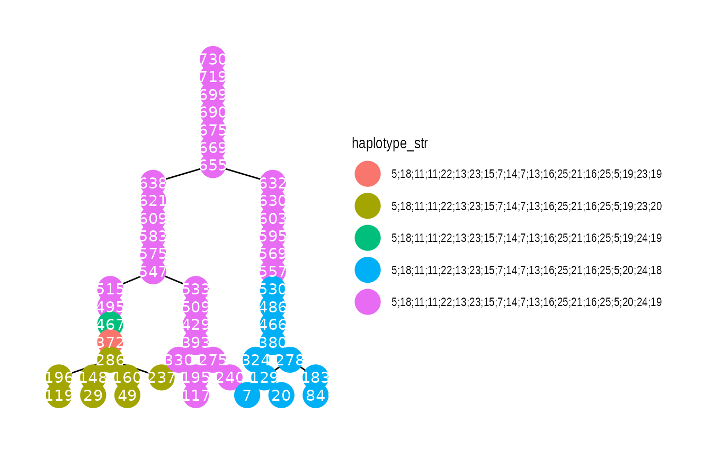

Case study: Partial profiles
Mikkel Meyer Andersen
25 June, 2020
Source:vignettes/case-study-partial.Rmd
case-study-partial.RmdFirst, the library is loaded:
library(malan)
For reproducibility, the seed for the (pseudo) random number generator is set:
set.seed(1)
Population simulation
First, the population sizes are determined:
A population can be simulated (hiding progress information) as follows:
set.seed(1) # For reproducibility sim_res_growth <- sample_geneology_varying_size( population_sizes = population_sizes, # VRS = 0.2: enable_gamma_variance_extension = TRUE, gamma_parameter_shape = 5, gamma_parameter_scale = 1/5, # Live population: # 3 generations generations_full = 3, generations_return = 3, progress = FALSE)
Live population:
live_pop <- sim_res_growth$individuals_generations
Building the pedigrees
Until pedigrees are build/infered, there is not much information available (e.g. about children). So let us infer the pedigrees:
pedigrees <- build_pedigrees(sim_res_growth$population, progress = FALSE) pedigrees
## List of 11 pedigrees (of size 217, 96, 95, 56, 51, 47, ...)pedigrees_count(pedigrees)
## [1] 11pedigrees_table(pedigrees)
## 33 37 39 21 47 38 51 56 95 96 217
## 1 1 1 1 1 1 1 1 1 1 1pedigree_size(pedigrees[[1]])
## [1] 217We can look at the population as a (tidy)graph:
g <- as_tbl_graph(pedigrees) g
## # A tbl_graph: 730 nodes and 719 edges
## #
## # A rooted forest with 11 trees
## #
## # Node Data: 730 x 4 (active)
## name gens_from_final ped_id haplotype
## <chr> <int> <int> <list>
## 1 727 19 4 <int [0]>
## 2 713 18 4 <int [0]>
## 3 704 17 4 <int [0]>
## 4 688 16 4 <int [0]>
## 5 685 15 4 <int [0]>
## 6 673 14 4 <int [0]>
## # … with 724 more rows
## #
## # Edge Data: 719 x 2
## from to
## <int> <int>
## 1 1 2
## 2 2 3
## 3 3 4
## # … with 716 more rowsThis can be plotted:
if (requireNamespace("ggraph", quietly = TRUE)) { library(ggraph) p <- ggraph(g, layout = 'tree') + geom_edge_link() + geom_node_point(size = 8) + geom_node_text(aes(label = name), color = "white") + facet_nodes(~ ped_id) + theme_graph() print(p) }
## Loading required package: ggplot2
This is rather difficult to make any sense of. Let’s instead plot only pedigree 1:
PED_ID <- 1 g_ped2 <- g %>% activate(nodes) %>% filter(ped_id == PED_ID) if (requireNamespace("ggraph", quietly = TRUE)) { library(ggraph) p <- ggraph(g_ped2, layout = 'tree') + geom_edge_link() + geom_node_point(size = 8) + geom_node_text(aes(label = name), color = "white") + theme_graph() print(p) }

Run a mutation process
Up until now, only the genealogy has been simulated. Now, we run a mutational process, i.e. assign haplotypes to founders and let haplotypes flow down the individuals.
We use realistic data. In the package, there is information about the individual markers:
ystr_markers## # A tibble: 29 x 5
## Marker Mutations Meioses MutProb Alleles
## <fct> <dbl> <dbl> <dbl> <list>
## 1 DYS438 4 10673 0.000375 <dbl [22]>
## 2 DYS392 8 15418 0.000519 <dbl [22]>
## 3 DYS393 15 14264 0.00105 <dbl [17]>
## 4 DYS437 13 10652 0.00122 <dbl [15]>
## 5 DYS385a 32 26171 0.00122 <dbl [52]>
## 6 DYS385b 32 26171 0.00122 <dbl [52]>
## 7 DYS643 3 2220 0.00135 <dbl [17]>
## 8 DYS448 11 7229 0.00152 <dbl [36]>
## 9 DYS390 33 15612 0.00211 <dbl [19]>
## 10 DYS19 36 16090 0.00224 <dbl [19]>
## # … with 19 more rowsNote, that MutProb is the point estimate given by MutProb = Mutations / Meioses. Information about which markers that are in which kit is also provided:
ystr_kits## # A tibble: 88 x 2
## Marker Kit
## <fct> <fct>
## 1 DYS392 Minimal
## 2 DYS393 Minimal
## 3 DYS385a Minimal
## 4 DYS385b Minimal
## 5 DYS390 Minimal
## 6 DYS19 Minimal
## 7 DYS391 Minimal
## 8 DYS389I Minimal
## 9 DYS389II Minimal
## 10 DYS438 PowerPlex Y
## # … with 78 more rowsystr_kits %>% count(Kit)
## # A tibble: 5 x 2
## Kit n
## <fct> <int>
## 1 Minimal 9
## 2 PowerPlex Y 12
## 3 Yfiler 17
## 4 PowerPlex Y23 23
## 5 Yfiler Plus 27Let us take all PowerPlex Y23 markers and assume that we only have a partial profile where DYS437 and DYS448 dropped out. At the same time, we also filter out the integer alleles (for generating random founder haplotypes in a minute):
partial_kit <- ystr_kits %>% filter(Kit == "PowerPlex Y23") %>% inner_join(ystr_markers, by = "Marker") %>% filter(!(Marker %in% c("DYS437", "DYS448"))) %>% rowwise() %>% # To work on each row mutate(IntegerAlleles = list(Alleles[Alleles == round(Alleles)]), MinIntAllele = min(IntegerAlleles), MaxIntAllele = max(IntegerAlleles)) %>% ungroup() %>% select(-Kit, -Alleles) partial_kit
## # A tibble: 21 x 7
## Marker Mutations Meioses MutProb IntegerAlleles MinIntAllele MaxIntAllele
## <fct> <dbl> <dbl> <dbl> <list> <dbl> <dbl>
## 1 DYS438 4 10673 0.000375 <dbl [14]> 5 19
## 2 DYS392 8 15418 0.000519 <dbl [14]> 6 20
## 3 DYS393 15 14264 0.00105 <dbl [12]> 7 18
## 4 DYS385a 32 26171 0.00122 <dbl [23]> 6 28
## 5 DYS385b 32 26171 0.00122 <dbl [23]> 6 28
## 6 DYS643 3 2220 0.00135 <dbl [13]> 4 17
## 7 DYS390 33 15612 0.00211 <dbl [14]> 17 30
## 8 DYS19 36 16090 0.00224 <dbl [12]> 9 20
## 9 DYS391 38 15486 0.00245 <dbl [12]> 5 16
## 10 DYS389I 42 14339 0.00293 <dbl [9]> 9 17
## # … with 11 more rowsThis “partial kit” has the following mutation probabilities:
mu <- partial_kit %>% pull(MutProb) mu
## [1] 0.0003747775 0.0005188740 0.0010515984 0.0012227274 0.0012227274
## [6] 0.0013513514 0.0021137586 0.0022374145 0.0024538293 0.0029290746
## [11] 0.0030266344 0.0036747818 0.0037541061 0.0041229909 0.0042882833
## [16] 0.0043338286 0.0050205386 0.0054475439 0.0063641395 0.0133475707
## [21] 0.0147194112We can make a founder haplotype generator as follows (sampling alleles randomly is not how Y-STR works, but it may work fine for founder haplotypes):
generate_random_haplotype <- function() { partial_kit %>% rowwise() %>% mutate(Allele = IntegerAlleles[sample.int(length(IntegerAlleles), 1)]) %>% pull(Allele) }
Now, a new haplotype is created everytime the function is called (with no arguments):
generate_random_haplotype()## [1] 9 10 13 14 14 4 29 18 12 14 18 11 11 27 14 20 31 13 18 24 22generate_random_haplotype()## [1] 18 17 18 14 28 13 30 17 12 11 18 8 11 33 12 17 16 11 17 19 13Of course such generator can also be created for a reference database with Y-STR profiles.
Now, we are ready to assign haplotypes to the genealogy:
set.seed(1) pedigrees_all_populate_haplotypes_custom_founders( pedigrees = pedigrees, get_founder_haplotype = generate_random_haplotype, mutation_rates = mu, progress = FALSE)
We can now plot pedigrees with haplotype information (note that as_tbl_graph needs to be called again):
g_ped2 <- as_tbl_graph(pedigrees) %>% activate(nodes) %>% filter(ped_id == PED_ID) %>% group_by(name) %>% mutate(haplotype_str = paste0(haplotype[[1]], collapse = ";")) #mutate(haplotype_str = map(haplotype, paste0, collapse = ";")[[1]]) if (requireNamespace("ggraph", quietly = TRUE)) { library(ggraph) p <- ggraph(g_ped2, layout = 'tree') + geom_edge_link() + geom_node_point(aes(color = haplotype_str), size = 8) + geom_node_text(aes(label = name), color = "white") + theme_graph() print(p) }
## Ungrouping graph...
Counting matches
We have live_pop from the population.
Drawing an individual and counting matches
set.seed(5) Q_index <- sample.int(n = length(live_pop), size = 1) Q <- live_pop[[Q_index]] print_individual(Q)
## pid = 322 with father pid = 376 and no childrenQ_hap <- get_haplotype(Q) Q_hap
## [1] 13 9 13 6 7 17 23 19 6 11 6 11 9 32 14 28 25 11 18 24 14Now, count matches in live part of pedigree and in live part of population:
Q_ped <- get_pedigree_from_individual(Q) ped_live_matches <- count_haplotype_occurrences_pedigree( pedigree = Q_ped, haplotype = Q_hap, generation_upper_bound_in_result = 2) # gen 0, 1, 2 pop_live_matches <- count_haplotype_occurrences_individuals( individuals = live_pop, haplotype = Q_hap) ped_live_matches
## [1] 36pop_live_matches## [1] 36We can also inspect pedigree matches information about number of meioses and \(L_1\) distances:
path_details <- pedigree_haplotype_matches_in_pedigree_meiosis_L1_dists( suspect = Q, generation_upper_bound_in_result = 2)
nrow(path_details)
## [1] 36head(path_details)
## meioses max_L1 pid
## [1,] 16 0 319
## [2,] 16 0 339
## [3,] 16 0 289
## [4,] 17 0 157
## [5,] 18 0 45
## [6,] 17 0 177This can of course be repeated to many populations (genealogies, haplotype processes, suspects etc.). Also note that variability can be put on mutation rates, e.g. by a Bayesian approach.